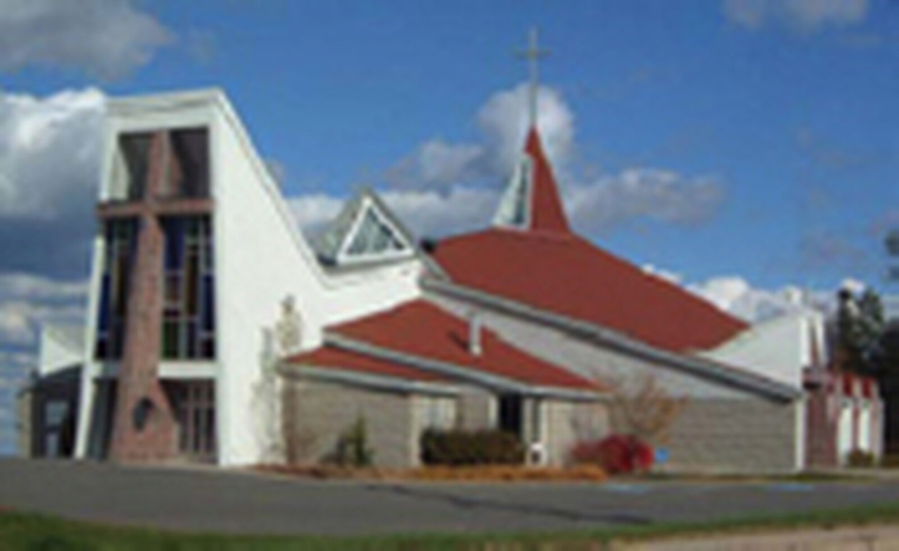

Καλώς ήρθατε
Καλώς ήρθατε στον ιστότοπο της ενορίας.
Η Paroisse Sainte-Anne-des-Pays-Bas, ιδρυμένη το 1981, βρίσκεται στην Fredericton, Nouveau-Brunswick. Αυτός ο ιστότοπος είναι ανεπίσημο αντίγραφο, καταρτισμένο υπό το δόγμα EVE Glyph Design, με την ίδια εκδοτική επιμέλεια που έχει ο επίσημος ιστότοπος της ενορίας. Η επίσημη πηγή παραμένει www.sainte-anne-des-pays-bas.ca.
Μία ενορία, ένας λαός
Η πίστη βιώνεται τοπικά, με μια κοινότητα που προσεύχεται, γιορτάζει και φροντίζει η μία την άλλη.
Ωράριο Θείας Λειτουργίας
| Ημέρα | Ώρα |
|---|---|
| Σάββατο βράδυ | 17 h 00 |
| Κυριακή | 11 h 00 |
| Δευτέρα, Τρίτη και Παρασκευή | 12 h 05 |